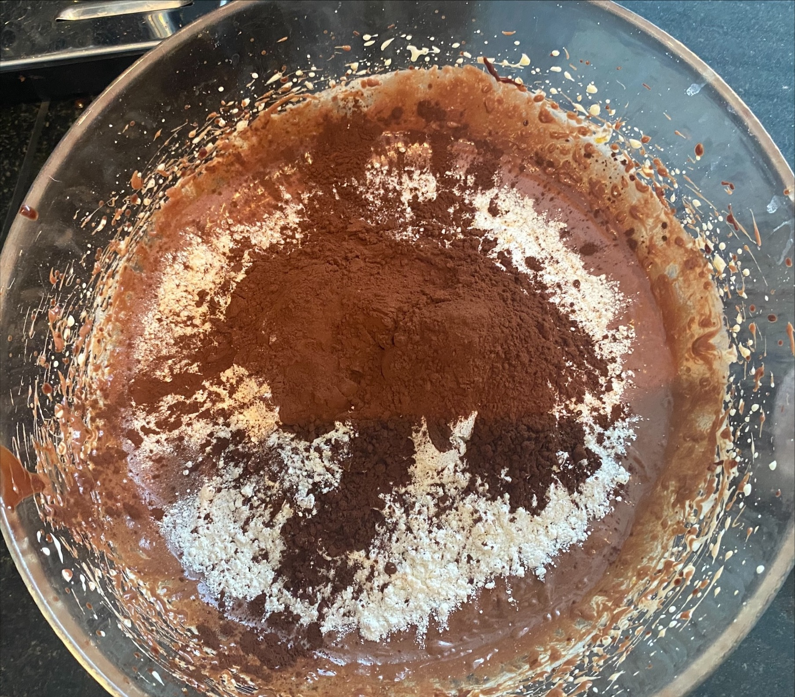
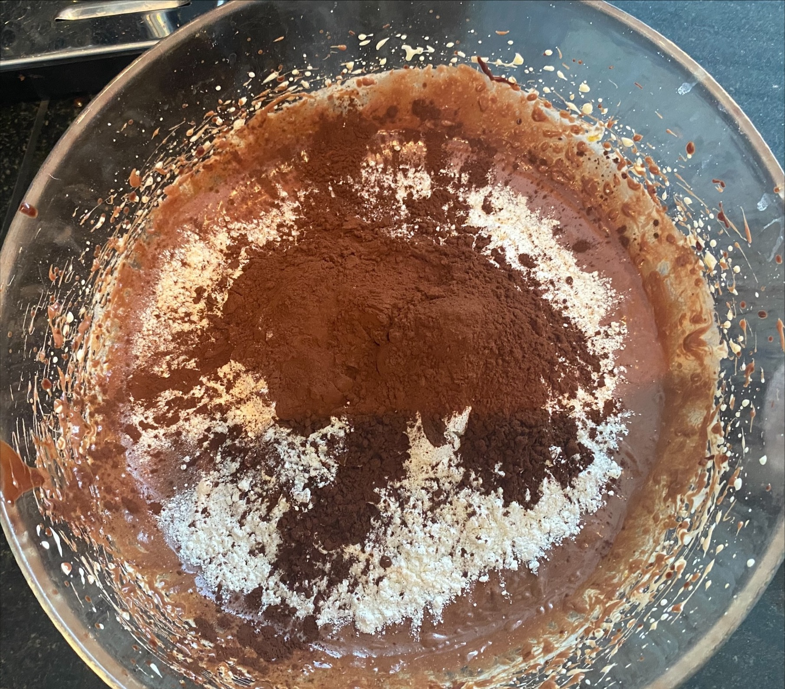

On this Website you can learn how to make Fudgy Cheesecake Brownies.


On this Website you can learn how to make Fudgy Cheesecake Brownies.
Here are the Ingredients:
For the brownie layer:
For the cheesecake layer:
Set the oven to 170°C (340°F) with top and bottom heat.

Line a square baking pan (approximately 20 x 20 cm) with parchment paper, letting the paper overhang on the sides. This will make it easier to lift the brownies out later.
Place 190 g of butter and 200 g of roughly chopped dark chocolate into a heatproof bowl.
Melt the mixture using a double boiler or in the microwave in short bursts. Stir the mixture until smooth and let it cool for 5–10 minutes.


In a large bowl, whisk together 3 eggs, 200 g sugar, 60 g light brown sugar, and 1 tablespoon vanilla extract with a whisk or hand mixer for 2-3 minutes until frothy.

Slowly pour the cooled chocolate mixture into the egg-sugar mixture while stirring constantly.
Sift 160 g of flour, 50 g of cocoa powder, and ½ teaspoon salt into the bowl. Gently fold the dry ingredients into the wet ingredients with a spatula until smooth. Avoid over-mixing to keep the batter fudgy.
 


In a bowl, combine 230 g of cream cheese (room temperature), 80 g sugar, 1 egg, and 2 teaspoons vanilla extract.


Use a hand mixer or whisk to blend everything until smooth and creamy.
Pour about half of the brownie batter into the prepared baking pan and smooth it out with a spatula.

Spread the entire cheesecake mixture evenly over the brownie batter.

Place the pan in the preheated oven and bake for about 25–30 minutes. The edges should be firm, but the center should still have a slight wobble. Check for doneness with a toothpick: it should come out with only a few moist crumbs (not raw batter).

Here is my Mockup for this Website on Figma:
The Inspiration came from this video
The Recipe is from this website
You can also download the recipe as a PDF: Download PDF